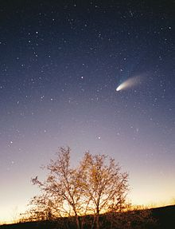
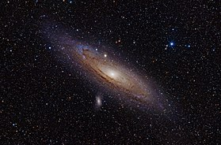
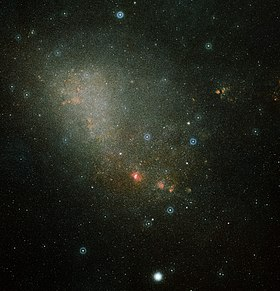
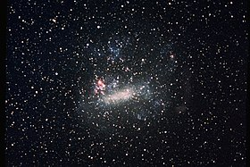
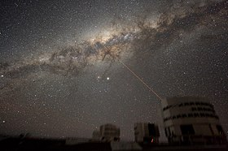
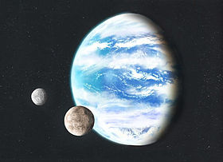

Les objets de l'Univers
Comète
Une comète (stylisé en symbole astronomique Symbole astronomique d'une comète.) est, en astronomie, un petit corps céleste constitué d'un noyau de glace et de poussière en orbite (sauf perturbation) autour d'une étoile. Lorsque son orbite, qui a généralement la forme d'une ellipse très allongée, l'amène près de cette étoile (par exemple le Soleil dans le système solaire), la comète est exposée à diverses forces émanant de cette dernière : vent stellaire, pression de radiation et gravitation. Le noyau s'entoure alors d'une sorte de fine atmosphère brillante constituée de gaz et de poussières, appelée chevelure ou coma, souvent prolongée de deux traînées lumineuses composées également de gaz et de poussières, les queues (une de gaz ionisé et une de poussières), qui peuvent s'étendre sur plusieurs dizaines de millions de kilomètres. Le Centre des planètes mineures répertorie au 14 janvier 2020 4 352 comètes. Dans le système solaire, quand elles s'approchent suffisamment de la Terre ou que leur magnitude est importante, les comètes deviennent visibles à l'œil nu (parfois même de jour) et peuvent être spectaculaires ; elles sont alors classées comme « grandes comètes ». Les comètes se distinguent des astéroïdes, autres petits corps, par l'activité de leur noyau. Cependant, les observations récentes de plusieurs astéroïdes présentant une activité cométaire, notamment dans la ceinture principale, tendent à rendre de plus en plus floue la distinction entre comète et astéroïdes1. Elles proviendraient de deux réservoirs principaux du système solaire : ceinture de Kuiper et nuage d'Oort, tandis que les comètes interstellaires ont une origine extérieure au système solaire.
Galaxie d'Andromède
La galaxie d'Andromède , également identifiée sous les numéros M31 dans le Catalogue de Messier et NGC 224 , est une galaxie spirale située à environ 2,55 millions d'années-lumière du Soleil, dans la constellation d'Andromède. La galaxie d'Andromède (NGC 224) a été utilisée par Gérard de Vaucouleurs comme une galaxie de type morphologique SA(s)b dans son atlas des galaxies9,10. Appelée grande nébuleuse d’Andromède jusqu'à ce que sa vraie nature ait été reconnue dans les années 1920, la galaxie d'Andromède est la galaxie spirale la plus proche de la Voie lactée (toutes classes confondues, la galaxie la plus proche est la naine du Grand Chien) et le plus grand membre du Groupe local d'une soixantaine de galaxies individuelles dont toutes deux font partie. D'un diamètre d'environ 220 000 années-lumière, elle contiendrait environ mille milliards d'étoiles11, deux à cinq fois plus que notre galaxie. Avec une magnitude visuelle de 3,4, la galaxie d'Andromède est l’une des rares galaxies observables à l'œil nu depuis la Terre dans l’hémisphère nord. C’est également l'un des objets les plus étendus de la voûte céleste, avec un diamètre apparent de 3,18°, soit plus de six fois le diamètre apparent de la Lune12 observée depuis la Terre.
| Découverte | |
|---|---|
| Découvreur(s) | Al-Soufi |
| Date | ~ 964 à Ispahan |
| Désignations |
|
Petit Nuage de Magellan
Le Petit Nuage de Magellan (NGC 292), souvent abrégé en SMC dans la littérature en référence à l'anglais Small Magellanic Cloud, est une galaxie naine de type SB(s)m appartenant au Groupe local et située dans la constellation du Toucan. Satellite de la Voie lactée, il s'agit d'une petite galaxie irrégulière apparentée à une galaxie spirale magellanique dont la barre est visible mais dont le bras spiral est très dispersé. La base de données NASA/IPAC rapporte un échantillon de près de 300 mesures dont la moyenne donne une distance au Soleil de 61 ± 7 kpc (∼199 000 a.l.)4. Avec une magnitude apparente visuelle de 2,2, c'est l'un des objets les plus éloignés pouvant être vus à l’œil nu. Compte tenu de sa déclinaison de près de -73°, il n'est visible aisément que depuis l'hémisphère sud, apparaissant comme une petite tache laiteuse et floue s'étendant sur environ 3° de large. Cependant, en raison de sa très faible brillance de surface, il n'est clairement visible que depuis un lieu éloigné de toute pollution lumineuse. Il a semble-t-il été mentionné pour la première fois par le navigateur Amerigo Vespucci dans le compte-rendu de son voyage des années 1503-1504, mais ce fut l'expédition de Magellan autour du monde qui le popularisa et qui lui donna son nom.
Objets notables du Petit Nuage de Magellan
Grand Nuage de Magellan
Le Grand Nuage de Magellan, en abrégé GNM4 (on trouve aussi souvent LMC dans la littérature en référence à l'anglais Large Magellanic Cloud), est une galaxie naine de type SB(s)m appartenant au Groupe local et située dans les constellations de la Dorade et de la Table. Satellite de la Voie lactée, il s'agit d'une petite galaxie spirale magellanique, caractérisée par une grande barre et un seul bras spiral. La base de données NASA/IPAC rapporte un échantillon de près de 25 000 mesures dont la moyenne donne une distance de 50 ± 3 kpc (∼163 000 a.l.). En 2019, cette distance est déterminée avec une précision de 1 % : 49,59 ± 0,54 kpc5. C'est la troisième galaxie la plus proche de la Voie lactée, après les galaxies naines du Grand Chien et du Sagittaire. D'un diamètre de ∼14 000 a.l. (∼4 290 pc)6, c'est la quatrième plus massive du Groupe local après la galaxie d'Andromède (M31), la Voie lactée et la galaxie du Triangle (M33). Visible dans le ciel nocturne de l'hémisphère sud, il a été mentionné pour la première fois par l'astronome perse Abd-al-Rahman Al Soufi en 964. Le navigateur Amerigo Vespucci le mentionne dans le compte-rendu de son voyage en 1503-1504 sans vraiment le définir7 et ce fut l’expédition de Magellan autour de la Terre qui le popularisa et qui lui donna son nom.
Objets notables
Le Grand Nuage de Magellan possède de très nombreux objets célestes notables. Parmi ceux-ci :
- la nébuleuse de la Tarentule, la plus active des régions H II du groupe local ;
- LMC X-1, un trou noir stellaire vu sous la forme d’une binaire X à forte masse;
- LMC X-3, un autre trou noir stellaire, également binaire X à forte masse ;
- SGR 0526-66, un sursauteur gamma mou, peut-être situé dans le rémanent de supernova N49
- PSR B0540-69 un pulsar jeune assez semblable au pulsar du Crabe (PSR B0531+21) ;
- NGC 1898, un amas globulaire.
Objets notables du Grand Nuage de Magellan
Voie lactée
La Voie lactée, aussi nommée la Galaxie (avec une majuscule), est une galaxie spirale barrée qui comprend de 200 à 400 milliards d'étoiles et au minimum 100 milliards de planètes. Elle abrite le Système solaire, et donc la Terre. Son diamètre est estimé à environ 100 000 à 120 000 années-lumière, voire à 150 000 ou à 200 000 années-lumière bien que le nombre d'étoiles au-delà de 120 000 années-lumière soit très faible. Elle et son cortège de galaxies satellites font partie du Groupe local, lui-même rattaché au superamas de la Vierge appartenant lui-même à Laniakea. Le Système solaire se situe à environ 27 000 années-lumière du centre de la Voie lactée, lequel est constitué d'un trou noir supermassif. Observée de la Terre, la Galaxie ressemble à une bande blanchâtre. Bande parce que le Système solaire est situé sur le bord de sa structure en forme de disque. Blanchâtre en raison de l'accumulation d'une multitude d’étoiles que l'on ne peut distinguer à l’œil nu, comme l'avaient déjà avancé Démocrite et Anaxagore. C'est grâce à sa lunette astronomique que Galilée démontre le premier, en 1610, que cette bande est due à la présence de nombreuses étoiles. L'astronome Thomas Wright élabore, en 1750, un modèle de la Galaxie, qui sera repris par le philosophe Emmanuel Kant, qui avance que les nébuleuses observées dans le ciel sont des « univers-îles ». Dans les années 1920, l'astronome Edwin Hubble prouve qu'elle n'est qu'une galaxie parmi plusieurs et clôt ainsi le Grand Débat qui porte notamment sur la nature des nébuleuses. C'est à partir des années 1930 que le modèle actuel de galaxie spirale avec un bulbe central s'impose pour la Voie lactée.
Exoplanètes
Uneexoplanète, ou planète extrasolaire, est une planète située en dehors du Système solaire. L'existence de planètes situées en dehors du Système solaire est évoquée dès le xvie siècle, mais ce n'est qu'au cours du xixe siècle que les exoplanètes deviennent l'objet de recherches scientifiques. Beaucoup d'astronomes supposent qu'elles peuvent exister, mais aucun moyen technique d'observation ne permet de prouver leur existence. La distance, mais aussi le manque de luminosité de ces objets célestes si petits par rapport aux étoiles autour desquelles ils orbitent, rendaient leur détection impossible. Ce n'est que dans les années 1990 que les premières exoplanètes sont détectées à l'observatoire de Haute-Provence, de manière indirecte, puis, depuis 2004, de manière directe. La plupart des exoplanètes découvertes à ce jour orbitent autour d'étoiles situées à moins de 400 années-lumière du Système solaire. Au 1er juillet 2021, 4 777 exoplanètes ont été confirmées dans 3 534 systèmes planétaires, dont 785 systèmes planétaires multiples6,7. Plusieurs milliers d'exoplanètes supplémentaires découvertes au moyen de télescopes terrestres ou d'observatoires spatiaux, dont Kepler, sont en attente de confirmation. En extrapolant à partir des découvertes déjà effectuées, il existerait au moins 100 milliards de planètes rien que dans notre galaxie.
